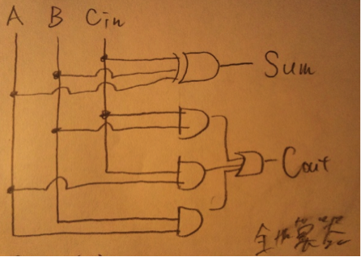
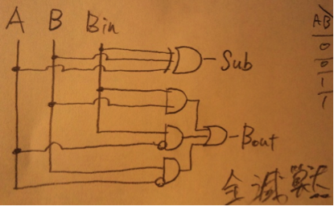
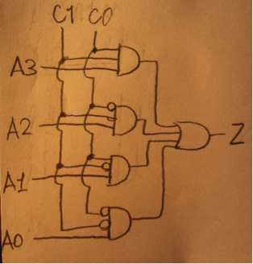

| 回数 | 変数 | s | a | b | c | d |
| 1回目 | X D |
◎ 0 |
X ∞ |
X 1 |
X ∞ |
X 8 |
| 2回目 | X D |
○ 0 |
X 3 |
◎ 1 |
X 6 |
X 7 |
| 3回目 | X D |
○ 0 |
◎ 3 |
○ 1 |
X 4 |
X 7 |
| 4回目 | X D |
○ 0 |
○ 3 |
○ 1 |
◎ 4 |
X 5 |
| 5回目 | X D |
○ 0 |
○ 3 |
○ 1 |
○ 4 |
◎ 5 |
暫定的なそれぞれの最短距離を更新する際に、どのノードから来た時の更新なのかをそれぞれのノードが一つの情報としてノードに記録しておけばよい。
頂点dの場合を(1)の表を見ながら考える。
1回目の更新：sから来て距離8
2回目の更新：bから来て距離７
3回目の更新：cから来て距離5
最短ルートを求める場合は、まず頂点dがどこから来たかを求めるとcであることが分かる。
同様にノードcにはaから来たという情報を保持している。
同様にaにはbから来たという情報。bにはsから来たという情報。
よって、s→b→a→c→dが最短ルートであることが分かった。
最悪の比較回数を考える。
前提として、while文中のfor文の頂点uに接する各辺は隣接リストで管理されてないものと解釈する。
(1)V-Xから距離が最小の頂点を探索する処理
Σ{q=1,n-1} (q-1) ＝ (1/2) (n^2 - 3 * n + 2)
→O(n^2)
(2)頂点uに接する各辺それぞれに行う比較処理
n * m
最悪の場合は完全グラフの場合であるので、m = n-1
n * (n-1) → O(n^2)
(1)、(2)を足すと、 n^2 + n^2 = O(n^2)となる。
複数のプロセスが何かしらの資源を占有しながら、他のプロセスが占有する資源の解放を待つ状態が相互に発生し、関わる全てのプロセスが解放待ち状態となり処理が停止してしまう状態。
２つのプロセスA、Bの場合を考える。
プロセスAは資源Pを、プロセスBは資源Qを占有している状態だとする。
プロセスAが資源Qを要求する場合、資源Qが解放するまで待ち状態に入る。
このときプロセスBが資源Pを要求した場合、プロセスBも同様に資源Pが解放されるまで待ち状態に入る。
プロセスA,Bともに待ち状態に入ってしまい、このままでは永遠に資源が開放されることは無く、処理が停止してしまう。
・プロセスAが資源Pをロックする際に、同時に資源Qもロックする方法。
・セマフォの獲得順序を工夫し、デッドロックが発生しないようにスケジューリングする。
・セマフォの獲得時間を設定し、過ぎた場合は強制的に解放させる方法。
・待ち行列に並んだら占有している資源を解放する。
などなど、、、。
任意アクセス制御。
全ての資源それぞれにその資源の所有者が設定され、資源のアクセス方針は所有者が全て決める制御方式。ACL(アクセス制御リスト)によってアクセス権情報が管理されている。
強制アクセス制御。
資源と、その資源を利用するプロセスに対してセキュリティレベルを付与し、レベルを比較することで強制的なアクセス制限をする方式。
・同期型メッセージパッシング
送信側は、受信側が受信準備が出来るまで待機する方式。送信したデータはそのまま受信側の記憶装置に送信されるのでバッファが必要無い。
・非同期型メッセージパッシング方式
送信側は受信側の受信準備を待たずに受信側のバッファにデータを送信するため、送信を待たされることが無い。しかしバッファオーバーフローに注意する必要がある。
単精度（32bit）の場合を示す。
| 符号ビット(1bit) | 指数ビット(8bit) | 仮数(23bit) |
・符号ビット
0：正の数
1：負の数
・指数ビット
127の下駄履き表現で指数を表す。
指数ビットが00000000の場合の指数が2^-127となり、01111111の場合に2^0となる。
・仮数
整数部が１であるようにした数の小数部を表す。
32bitの場合。
32bit = 4byte
多バイトのデータの格納方法。
・Big Endian(ビッグエンディアン)
人間から見て分かりやすいデータ格納方法。データの上位バイトからメモリ上の低いアドレスに順次格納する方法。4byteの0A , 0B , 0C , 0D というデータをメモリに格納する場合、
| a番地 | 0A |
| a+1番地 | 0B |
| a+2番地 | 0C |
| a+3番地 | 0D |
といったように直感的に分かりやすい格納方法。
・Little Endian(リトルエンディアン)
データの下位バイトからメモリ上の低いアドレスに順次格納する方式。
| a番地 | 0D |
| a+1番地 | 0C |
| a+2番地 | 0B |
| a+3番地 | 0A |
といったようになる。コンピュータからはリトルエンディアンの方が処理しやすい。
メモリのそれぞれの番地が、キャッシュメモリ上の一つの場所に対応する方式。
メモリのそれぞれの番地が、キャッシュメモリ上の全ての場所に対応する方式。
メモリのそれぞれの番地が、連想度に応じた数の場所に対応する方式。
例として2-way セットアソシアティブ方式(連想度２)では、メモリのそれぞれの番地が、キャッシュメモリ上の２つの場所に対応する方式。
通信時に起こったエラーを検出するために用いられる。（IP、TCP、UDPヘッダ）
・パケット全体を2オクテットごとの16bit列に分割。
・それぞれの１の補数を求め、和を求める。
・その１の補数をチェックサムとする。
TCPはヘッダに加え、データを含めたチェックを行うのに対し、UDPはヘッダに対してのみチェックを行う。
ACK : データの受信が正常に完了したときに、そのことを送信側に知らせるために送られる信号。同時に次に欲しいパケットの番号を送信元に伝える。
NACK : データが正常に受信出来なかった場合などに、そのことを送信側に知らせるために送られる信号。
TCPでは信頼性ある通信の実現のため、具体的な情報を持たないNAKを使用しない。
代わりに再送すべきACK番号を送信することで、これを実現する。
伝送中にエラーが発生していないかどうかを検出する方法。巡回冗長検査とも呼ばれる。
送信側は伝送するデータに対し、巡回的なアルゴリズムを適用し、CRCコードと呼ばれる冗長的なデータを生成し、データに加えて送信。受信側も同じ計算をして、受信したCRCコードと比較し、データが誤りなく伝送されたことを確認する方法。
伝送データを一定区画に区切り、それぞれその中に含まれる１が偶数個か奇数個かに対応させて、０又は１を添付して送信する。この添付した１ビットを、パリティビットと呼ぶ。受信側はパリティビットと、１の数の対応が正しいかをチェックをすることで、データの誤り検出を行う。
ハミング符号。wikipedia参照
| A | B | Cin | Sum | Cout |
| 0 | 0 | 0 | 0 | 0 |
| 0 | 0 | 1 | 1 | 0 |
| 0 | 1 | 0 | 1 | 0 |
| 0 | 1 | 1 | 0 | 1 |
| 1 | 0 | 0 | 1 | 0 |
| 1 | 0 | 1 | 0 | 1 |
| 1 | 1 | 0 | 0 | 1 |
| 1 | 1 | 1 | 1 | 1 |

| A | B | Bin | Sub | Bout |
| 0 | 0 | 0 | 0 | 0 |
| 0 | 0 | 1 | 1 | 1 |
| 0 | 1 | 0 | 1 | 1 |
| 0 | 1 | 1 | 0 | 1 |
| 1 | 0 | 0 | 1 | 0 |
| 1 | 0 | 1 | 0 | 0 |
| 1 | 1 | 0 | 0 | 0 |
| 1 | 1 | 1 | 1 | 1 |
カルノー図で簡約化して設計すると、

出力をZとすると、

C1C0が
00 : A0の出力
01 : A1の出力
10 : A2の出力
11 : A3の出力
省略。マルチプレクサで各機能を分けてあとは素直にそのまま設計すればよい。